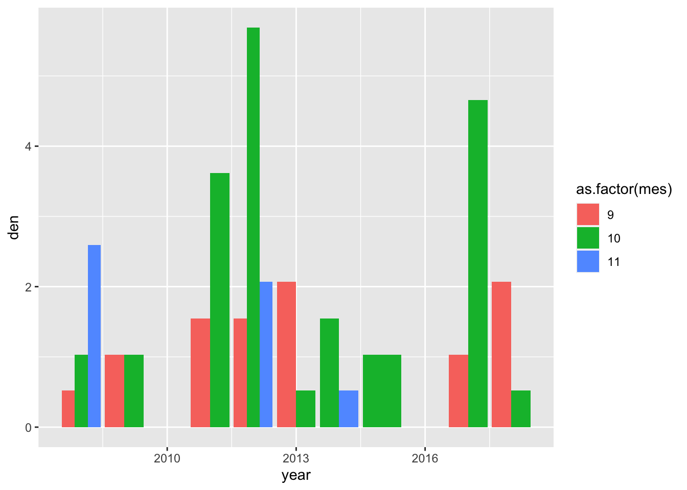
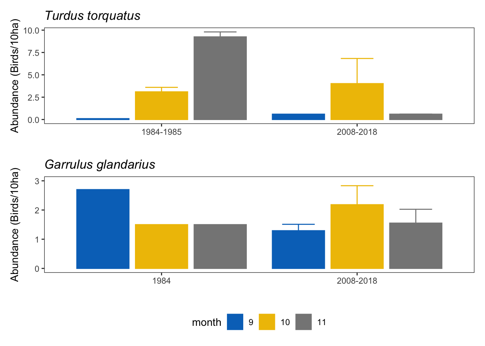
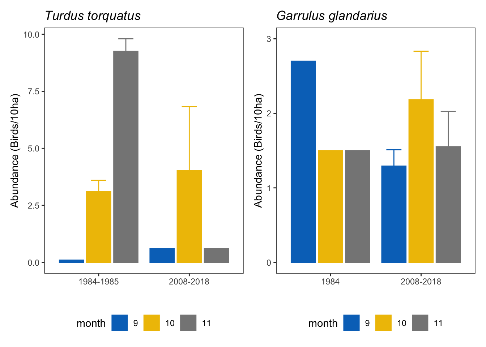

Last updated: 2021-06-28
Checks: 6 1
Knit directory: booksn_dispersantes/
This reproducible R Markdown analysis was created with workflowr (version 1.6.2). The Checks tab describes the reproducibility checks that were applied when the results were created. The Past versions tab lists the development history.
The R Markdown file has staged changes. To know which version of the R Markdown file created these results, you’ll want to first commit it to the Git repo. If you’re still working on the analysis, you can ignore this warning. When you’re finished, you can run wflow_publish to commit the R Markdown file and build the HTML.
Great job! The global environment was empty. Objects defined in the global environment can affect the analysis in your R Markdown file in unknown ways. For reproduciblity it’s best to always run the code in an empty environment.
The command set.seed(20210428) was run prior to running the code in the R Markdown file. Setting a seed ensures that any results that rely on randomness, e.g. subsampling or permutations, are reproducible.
Great job! Recording the operating system, R version, and package versions is critical for reproducibility.
Nice! There were no cached chunks for this analysis, so you can be confident that you successfully produced the results during this run.
Great job! Using relative paths to the files within your workflowr project makes it easier to run your code on other machines.
Great! You are using Git for version control. Tracking code development and connecting the code version to the results is critical for reproducibility.
The results in this page were generated with repository version ff788a4. See the Past versions tab to see a history of the changes made to the R Markdown and HTML files.
Note that you need to be careful to ensure that all relevant files for the analysis have been committed to Git prior to generating the results (you can use wflow_publish or wflow_git_commit). workflowr only checks the R Markdown file, but you know if there are other scripts or data files that it depends on. Below is the status of the Git repository when the results were generated:
Ignored files:
Ignored: .Rhistory
Ignored: .Rproj.user/
Ignored: analysis/figure/
Ignored: data/.DS_Store
Unstaged changes:
Modified: analysis/arrendajo_mirlo.Rmd
Modified: output/garrulus_torquatus.pdf
Staged changes:
Modified: analysis/abundance.Rmd
Modified: analysis/arrendajo_mirlo.Rmd
Modified: data/passerine_ab.csv
Modified: output/garrulus_torquatus.pdf
Modified: output/mktrend/plot_mktrend.pdf
Note that any generated files, e.g. HTML, png, CSS, etc., are not included in this status report because it is ok for generated content to have uncommitted changes.
These are the previous versions of the repository in which changes were made to the R Markdown (analysis/arrendajo_mirlo.Rmd) and HTML (docs/arrendajo_mirlo.html) files. If you’ve configured a remote Git repository (see ?wflow_git_remote), click on the hyperlinks in the table below to view the files as they were in that past version.
| File | Version | Author | Date | Message |
|---|---|---|---|---|
| Rmd | 3026ca1 | Antonio J Perez-Luque | 2021-06-28 | wflow_publish(“analysis/arrendajo_mirlo.Rmd”) |
### Prepara datos de Arrendajo por mes
Obsnev bird censuses provided by OBSNEV, realized in several transects distributed along Sierra Nevada. Temporal range from 2008 to 2020. The data were downloaded from new information system of OBSNEV (i.e. PostgreSQL db01.obsnev.es)
Raw data were downloaded from OBSNEV information system. The downloaded tables were: contactos_paseriformes.csv; dicc_especies.csv; geo.csv; visitas.csv.
The protocol sampling number for passerine in the database is 5.
Select the two locations: “Cortijo del Hornillo” (SANJUAN), “Robledal de Canar” (CANAR)
Select only the taxonomic level = species (level > 6)
Filter out data contacted over 30 m
contactos <- read_csv(here::here("data/data_raw/contactos_paseriformes.csv")) %>%
dplyr::select(-fcreacion, -fmodificacion)
── Column specification ────────────────────────────────────────────────────────
cols(
id = col_double(),
idvisitas = col_double(),
idesp = col_double(),
numero = col_double(),
distancia = col_double(),
desplazamiento = col_double(),
observaciones = col_character(),
fcreacion = col_datetime(format = ""),
fmodificacion = col_datetime(format = "")
)Warning: 1766 parsing failures.
row col expected actual file
18981 desplazamiento a double NULL '/Users/ajpelu/Google Drive/MS/books/2021_SN/booksn_dispersantes/data/data_raw/contactos_paseriformes.csv'
19640 desplazamiento a double NULL '/Users/ajpelu/Google Drive/MS/books/2021_SN/booksn_dispersantes/data/data_raw/contactos_paseriformes.csv'
22591 desplazamiento a double NULL '/Users/ajpelu/Google Drive/MS/books/2021_SN/booksn_dispersantes/data/data_raw/contactos_paseriformes.csv'
23111 desplazamiento a double NULL '/Users/ajpelu/Google Drive/MS/books/2021_SN/booksn_dispersantes/data/data_raw/contactos_paseriformes.csv'
24366 desplazamiento a double NULL '/Users/ajpelu/Google Drive/MS/books/2021_SN/booksn_dispersantes/data/data_raw/contactos_paseriformes.csv'
..... .............. ........ ...... ..........................................................................................................
See problems(...) for more details.dicc_sp <- read_csv(here::here("data/data_raw/dicc_especies.csv")) %>%
dplyr::select(idesp, nombre_cientifico, nivel)
── Column specification ────────────────────────────────────────────────────────
cols(
idesp = col_double(),
id = col_double(),
nombre_cientifico = col_character(),
created_at = col_datetime(format = ""),
updated_at = col_datetime(format = ""),
ent_pk = col_double(),
imagen = col_character(),
dicc_ecologia_id = col_character(),
dicc_biogeovoou_id = col_character(),
dicc_biogeosimple_id = col_character(),
dicc_estatussn_id = col_character(),
dicc_ecologiatrofica_id = col_character(),
ent_pk_padre = col_double(),
autor = col_character(),
nombre_comun = col_character(),
nivel = col_double(),
audio = col_character(),
idprotocolo = col_character()
)Warning: 258 parsing failures.
row col expected actual file
24295 ent_pk_padre a double NULL '/Users/ajpelu/Google Drive/MS/books/2021_SN/booksn_dispersantes/data/data_raw/dicc_especies.csv'
24295 nivel a double NULL '/Users/ajpelu/Google Drive/MS/books/2021_SN/booksn_dispersantes/data/data_raw/dicc_especies.csv'
24296 ent_pk_padre a double NULL '/Users/ajpelu/Google Drive/MS/books/2021_SN/booksn_dispersantes/data/data_raw/dicc_especies.csv'
24296 nivel a double NULL '/Users/ajpelu/Google Drive/MS/books/2021_SN/booksn_dispersantes/data/data_raw/dicc_especies.csv'
24297 ent_pk_padre a double NULL '/Users/ajpelu/Google Drive/MS/books/2021_SN/booksn_dispersantes/data/data_raw/dicc_especies.csv'
..... ............ ........ ...... .................................................................................................
See problems(...) for more details.# El protocolo de paseriformes es el 5
dicc_visita <- read_csv(here::here("data/data_raw/visitas.csv"),
col_types =
cols(.default ="?",
idgeo = col_character(),
fvisita = col_datetime(format="%Y-%m-%d %H:%M:%S"))) %>%
filter(protocolo == 5) Warning: 738 parsing failures.
row col expected actual file
7530 idviento a double NULL '/Users/ajpelu/Google Drive/MS/books/2021_SN/booksn_dispersantes/data/data_raw/visitas.csv'
7530 idnubes a double NULL '/Users/ajpelu/Google Drive/MS/books/2021_SN/booksn_dispersantes/data/data_raw/visitas.csv'
7531 idviento a double NULL '/Users/ajpelu/Google Drive/MS/books/2021_SN/booksn_dispersantes/data/data_raw/visitas.csv'
7531 idnubes a double NULL '/Users/ajpelu/Google Drive/MS/books/2021_SN/booksn_dispersantes/data/data_raw/visitas.csv'
7532 idviento a double NULL '/Users/ajpelu/Google Drive/MS/books/2021_SN/booksn_dispersantes/data/data_raw/visitas.csv'
.... ........ ........ ...... ...........................................................................................
See problems(...) for more details.dicc_geo <- read_csv(here::here("data/data_raw/geo.csv"),
col_types = cols(.default ="?",
longitud_m = col_double()))Warning: 126 parsing failures.
row col expected actual file
2 longitud_m a double NULL '/Users/ajpelu/Google Drive/MS/books/2021_SN/booksn_dispersantes/data/data_raw/geo.csv'
3 longitud_m a double NULL '/Users/ajpelu/Google Drive/MS/books/2021_SN/booksn_dispersantes/data/data_raw/geo.csv'
4 longitud_m a double NULL '/Users/ajpelu/Google Drive/MS/books/2021_SN/booksn_dispersantes/data/data_raw/geo.csv'
5 longitud_m a double NULL '/Users/ajpelu/Google Drive/MS/books/2021_SN/booksn_dispersantes/data/data_raw/geo.csv'
6 longitud_m a double NULL '/Users/ajpelu/Google Drive/MS/books/2021_SN/booksn_dispersantes/data/data_raw/geo.csv'
... .......... ........ ...... .......................................................................................
See problems(...) for more details.visita_geo <-
dicc_visita %>% inner_join(dicc_geo, by = "idgeo") %>%
dplyr::select(idvisitas, fvisita, nombre, longitud_m)
dfraw <- contactos %>%
inner_join(visita_geo, by = "idvisitas") %>%
inner_join(dicc_sp, by = "idesp") %>%
mutate(year = lubridate::year(fvisita),
mes = lubridate::month(fvisita))
df <- dfraw %>%
filter(nombre %in% c("Cortijo del Hornillo", "Robledal de Cáñar")) %>%
mutate(habitat = case_when(
stringr::str_detect(nombre, "Hornillo") ~ "SANJUAN",
stringr::str_detect(nombre, "Cáñar") ~ "CANAR")) %>%
mutate(year = lubridate::year(fvisita),
mes = lubridate::month(fvisita),
fecha = strftime(fvisita, format="%Y-%m-%d")) %>%
filter(nivel > 6) %>%
filter(desplazamiento < 31)Aggregated data to get the sum of all contacts for a specie recorded in the same visit of the same transect
Select data from month = 9, 10, 11
garrulus <- df %>%
filter(nombre_cientifico == "Garrulus glandarius") %>%
group_by(fecha, year, mes, longitud_m, nombre, habitat, nivel) %>%
summarise(total_ind = sum(numero)) %>%
mutate(den = round((total_ind * 10000 * 10 / (longitud_m * 60)),2)) %>%
ungroup() %>%
rename(localidad = habitat) %>%
dplyr::select(-nivel, -longitud_m, -nombre, -total_ind, -fecha) %>%
filter(mes %in% c(9,10,11)) %>%
filter(year > 2007)`summarise()` has grouped output by 'fecha', 'year', 'mes', 'longitud_m', 'nombre', 'habitat'. You can override using the `.groups` argument.dataRZ <- data.frame(year = rep(1984,3),
mes = c(9,10,11),
localidad = rep("SANJUAN", 3),
den = c(2.7,1.5,1.5))
garrulus_all <- bind_rows(garrulus, dataRZ)garrulus %>% filter(localidad == "SANJUAN") %>%
ggplot(aes(x=year, y=den, fill=as.factor(mes))) +
geom_bar(stat="identity", position = position_dodge(.9))
garrulus_mean <- garrulus %>%
group_by(mes, localidad) %>%
summarize(den_avg = mean(den, na.rm=TRUE),
den_sd = sd(den, na.rm = TRUE),
den_se = std.error(den, na.rm=TRUE)) %>%
mutate(date = "2008-2018") `summarise()` has grouped output by 'mes'. You can override using the `.groups` argument.dataRZ_mean <- data.frame(date = rep("1984",3),
mes = c(9,10,11),
localidad = rep("SANJUAN", 3),
den_avg = c(2.7,1.5,1.5),
den_sd = NA, den_se=NA)
compare_garrulus <- bind_rows(garrulus_mean, dataRZ_mean)Plot
pos <- position_dodge(0.9)
ab_garrulus <- compare_garrulus %>%
mutate(mes = factor(mes, levels = c("9","10","11"))) %>%
filter(localidad == "SANJUAN") %>%
ggplot(aes(x=date, y=den_avg,
fill= mes, color = mes)) +
# geom_point(position = pos) +
geom_bar(stat="identity", position = pos, width = .8) +
geom_errorbar(aes(ymin=den_avg - den_se, ymax = den_avg + den_se),
position = position_dodge(0.9), width = .5) +
ylab("Abundance (Birds/10ha)") + xlab("") +
ylim(0,3) +
theme_bw() +
scale_fill_jco() +
scale_color_jco() +
theme(panel.grid = element_blank(),
plot.title = element_text(face="italic")) +
ggtitle("Garrulus glandarius") +
guides(col=guide_legend("month"),
fill=guide_legend("month"))df_turdus <- dfraw %>%
mutate(year = lubridate::year(fvisita),
mes = lubridate::month(fvisita),
fecha = strftime(fvisita, format="%Y-%m-%d")) %>%
filter(nivel > 6) %>%
filter(desplazamiento < 31) %>%
filter(nombre_cientifico == "Turdus torquatus")
# n Campos de Otero = 22
turdus <- df_turdus %>%
filter(nombre == "Campos de Otero") %>%
group_by(fecha, year, mes, longitud_m, nombre, nivel) %>%
summarise(total_ind = sum(numero)) %>%
mutate(den = round((total_ind * 10000 * 10 / (longitud_m * 60)),2)) %>%
ungroup() %>%
dplyr::select(-nivel, -longitud_m, -nombre, -total_ind, -fecha) %>%
filter(mes %in% c(9,10,11)) %>%
filter(year > 2007) %>%
mutate(date = "2008-2018")`summarise()` has grouped output by 'fecha', 'year', 'mes', 'longitud_m', 'nombre'. You can override using the `.groups` argument.turdus_old <- data.frame(
year = c(1984, 1984, 1984, 1985, 1985),
mes = c(9, 10, 11, 10, 11),
den = c(0.1, 2.6, 8.7, 3.6, 9.8),
date = rep("1984-1985",5)
)
turdus_all <- bind_rows(turdus, turdus_old)
turdus_avg <- turdus_all %>%
group_by(mes, date) %>%
summarize(den_avg = mean(den, na.rm=TRUE),
den_sd = sd(den, na.rm = TRUE),
den_se = std.error(den, na.rm=TRUE))`summarise()` has grouped output by 'mes'. You can override using the `.groups` argument.pos <- position_dodge(0.9)
ab_turdus <- turdus_avg %>%
mutate(mes = factor(mes, levels = c("9","10","11"))) %>%
ggplot(aes(x=date, y=den_avg,
fill= mes, color = mes)) +
# geom_point(position = pos) +
geom_bar(stat="identity", position = pos, width = .8) +
geom_errorbar(aes(ymin=den_avg - den_se, ymax = den_avg + den_se),
position = position_dodge(0.9), width = .5) +
ylab("Abundance (Birds/10ha)") + xlab("") +
theme_bw() +
scale_fill_jco() +
scale_color_jco() +
theme(panel.grid = element_blank(),
plot.title = element_text(face="italic")) +
ggtitle("Turdus torquatus") +
guides(col=guide_legend("month"),
fill=guide_legend("month"))library(patchwork)
gar_tor <- ab_turdus + ab_garrulus &
theme(legend.position = "bottom")
garrulus_torquatus <- gar_tor + plot_layout(ncol=1, guides = "collect") garrulus_torquatus
ggsave(here::here("output/garrulus_torquatus.pdf"),
width =10, height = 15, units = "cm")
gar_tor
dev.off()null device
1
sessionInfo()R version 4.0.2 (2020-06-22)
Platform: x86_64-apple-darwin17.0 (64-bit)
Running under: macOS Catalina 10.15.3
Matrix products: default
BLAS: /Library/Frameworks/R.framework/Versions/4.0/Resources/lib/libRblas.dylib
LAPACK: /Library/Frameworks/R.framework/Versions/4.0/Resources/lib/libRlapack.dylib
locale:
[1] en_US.UTF-8/en_US.UTF-8/en_US.UTF-8/C/en_US.UTF-8/en_US.UTF-8
attached base packages:
[1] stats graphics grDevices utils datasets methods base
other attached packages:
[1] patchwork_1.1.1 ggsci_2.9 flextable_0.6.3
[4] statsExpressions_1.1.0 ggstatsplot_0.7.2 kableExtra_1.3.1
[7] broom_0.7.6 plotrix_3.8-1 report_0.3.0
[10] car_3.0-10 carData_3.0-4 here_1.0.1
[13] forcats_0.5.1 stringr_1.4.0 dplyr_1.0.6
[16] purrr_0.3.4 readr_1.4.0 tidyr_1.1.3
[19] tibble_3.1.2 ggplot2_3.3.3 tidyverse_1.3.1
[22] workflowr_1.6.2
loaded via a namespace (and not attached):
[1] uuid_0.1-4 readxl_1.3.1
[3] pairwiseComparisons_3.1.3 backports_1.2.1
[5] systemfonts_1.0.0 plyr_1.8.6
[7] splines_4.0.2 gmp_0.6-2
[9] kSamples_1.2-9 ipmisc_5.0.2
[11] TH.data_1.0-10 digest_0.6.27
[13] SuppDists_1.1-9.5 htmltools_0.5.1.1
[15] fansi_0.4.2 magrittr_2.0.1
[17] memoise_2.0.0 paletteer_1.3.0
[19] openxlsx_4.2.3 modelr_0.1.8
[21] officer_0.3.16 sandwich_3.0-0
[23] colorspace_2.0-0 rvest_1.0.0
[25] ggrepel_0.9.1 haven_2.3.1
[27] xfun_0.23 crayon_1.4.1
[29] jsonlite_1.7.2 zeallot_0.1.0
[31] survival_3.2-7 zoo_1.8-8
[33] glue_1.4.2 gtable_0.3.0
[35] emmeans_1.5.4 webshot_0.5.2
[37] MatrixModels_0.4-1 Rmpfr_0.8-2
[39] abind_1.4-5 scales_1.1.1
[41] mvtnorm_1.1-1 DBI_1.1.1
[43] PMCMRplus_1.9.0 Rcpp_1.0.6
[45] viridisLite_0.3.0 xtable_1.8-4
[47] performance_0.7.2 foreign_0.8-81
[49] httr_1.4.2 ellipsis_0.3.2
[51] farver_2.0.3 pkgconfig_2.0.3
[53] reshape_0.8.8 multcompView_0.1-8
[55] sass_0.3.1 dbplyr_2.1.1
[57] utf8_1.1.4 labeling_0.4.2
[59] tidyselect_1.1.0 rlang_0.4.10
[61] later_1.1.0.1 ggcorrplot_0.1.3
[63] effectsize_0.4.5 munsell_0.5.0
[65] cellranger_1.1.0 tools_4.0.2
[67] cachem_1.0.4 cli_2.5.0
[69] generics_0.1.0 evaluate_0.14
[71] fastmap_1.1.0 BWStest_0.2.2
[73] yaml_2.2.1 rematch2_2.1.2
[75] knitr_1.31 fs_1.5.0
[77] zip_2.1.1 WRS2_1.1-1
[79] pbapply_1.4-3 whisker_0.4
[81] xml2_1.3.2 correlation_0.6.1
[83] compiler_4.0.2 rstudioapi_0.13
[85] curl_4.3 ggsignif_0.6.0
[87] reprex_2.0.0 bslib_0.2.4
[89] stringi_1.5.3 highr_0.8
[91] parameters_0.14.0 gdtools_0.2.3
[93] lattice_0.20-41 Matrix_1.3-2
[95] vctrs_0.3.8 pillar_1.6.1
[97] lifecycle_1.0.0 mc2d_0.1-18
[99] jquerylib_0.1.3 estimability_1.3
[101] data.table_1.13.6 insight_0.14.1
[103] httpuv_1.5.5 R6_2.5.0
[105] promises_1.2.0.1 rio_0.5.16
[107] BayesFactor_0.9.12-4.2 codetools_0.2-18
[109] MASS_7.3-53 gtools_3.8.2
[111] assertthat_0.2.1 rprojroot_2.0.2
[113] withr_2.4.1 multcomp_1.4-16
[115] bayestestR_0.9.0 parallel_4.0.2
[117] hms_1.0.0 grid_4.0.2
[119] coda_0.19-4 rmarkdown_2.8
[121] git2r_0.28.0 base64enc_0.1-3
[123] lubridate_1.7.10